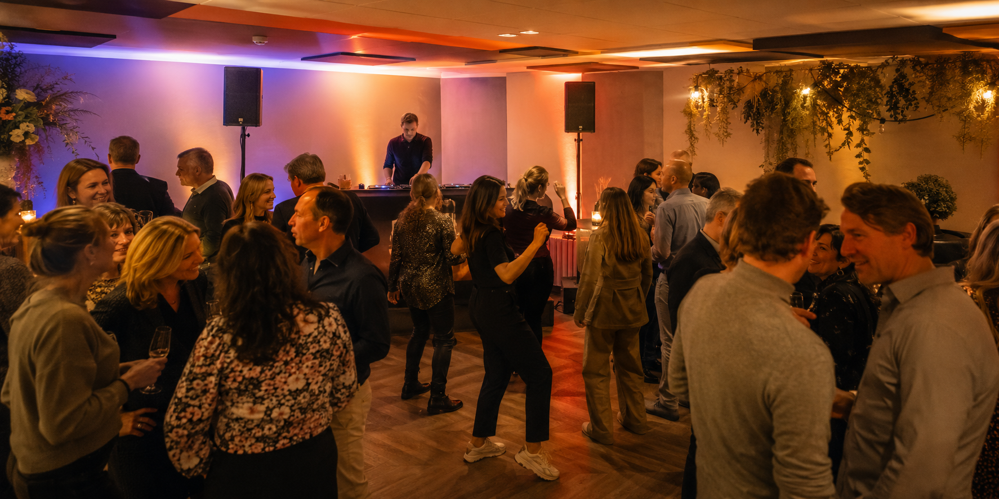
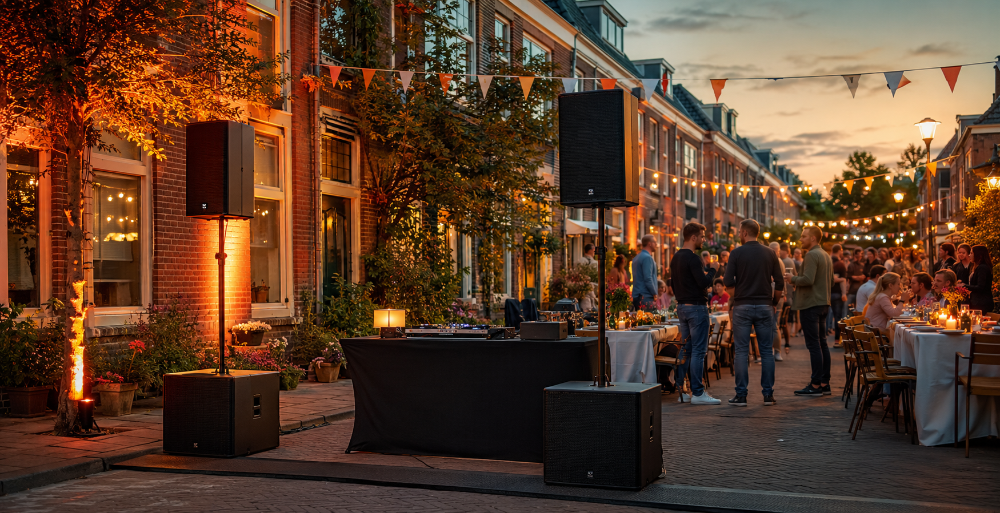

Een gezellige borrel
Goed verstaanbare achtergrondmuziek, eventueel gecombineerd met een microfoon voor een speech, quiz of karaoke.
Particuliere feesten
Goed geluid en passende verlichting maken het verschil. Wij zorgen voor een opstelling die aansluit bij de locatie, het aantal gasten en de sfeer die je wilt creëren. Klein en eenvoudig waar dat kan, uitgebreider wanneer het feest daarom vraagt.
Vertel ons wat je gaat vieren
Je hoeft zelf niet te weten welke speakers of verlichting je nodig hebt. Vertel ons waar het feest plaatsvindt, hoeveel gasten je verwacht en wat je ongeveer wilt doen. Wij stellen vervolgens een passende set voor.
Dat kan een kleine geluidsinstallatie voor achtergrondmuziek en een toespraak zijn, maar ook een complete opstelling met dansvloerlicht, DJ-apparatuur en bediening. Je kunt het materiaal bij ons afhalen of alles laten bezorgen, aansluiten en na afloop weer laten ophalen.

Ook buiten goed geregeld

Zo regelen we het
Wat vier je, waar vindt het plaats, hoeveel gasten komen er en wat wil je tijdens de avond kunnen doen?
We adviseren een set die past bij het feest en de ruimte. Niet onnodig groot, maar ook niet te klein gekozen.
Je kunt de apparatuur zelf afhalen. Bezorgen, opbouwen, aansluiten en later weer ophalen is ook mogelijk.
Veelgestelde vragen
Ja. Ook voor een klein feest of een borrel kun je een compacte set huren. We stemmen de grootte af op de ruimte en het aantal gasten.
Ja. We kunnen het materiaal bezorgen, opbouwen en gebruiksklaar aansluiten. Na het feest kunnen we het ook weer ophalen en afbouwen.
Dan bespreken we vooraf de locatie, stroomvoorziening, plaatsing en bescherming tegen regen. Ook houden we rekening met de omgeving en eventuele geluidsbeperkingen.
Ja. Afhankelijk van de gekozen set kun je eenvoudig een telefoon, tablet, laptop of DJ-apparatuur aansluiten.
Ja. Voor een complete avond met DJ, geluid en verlichting kun je kiezen voor onze drive-in show.
Neem vrijblijvend contact op, dan kijken we welke opstelling past bij jouw feest en locatie.